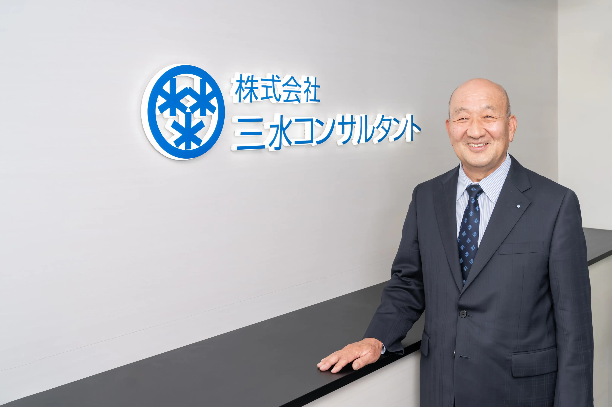
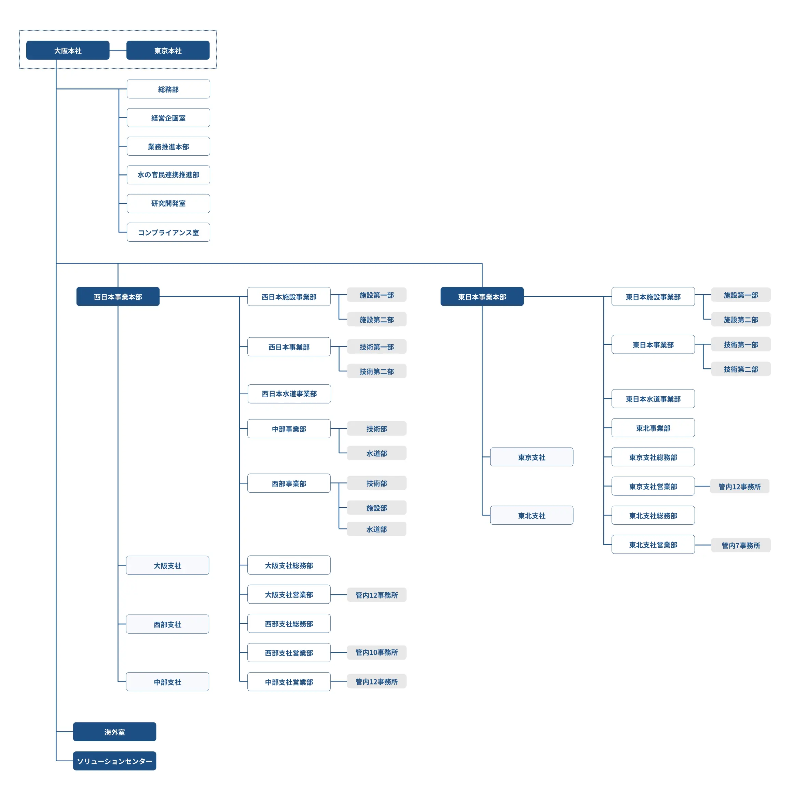
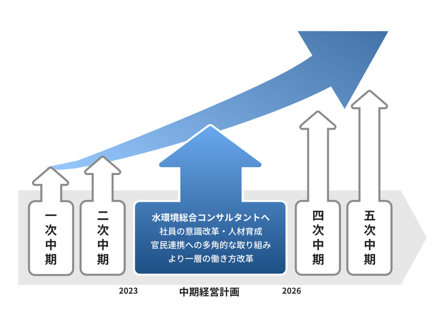
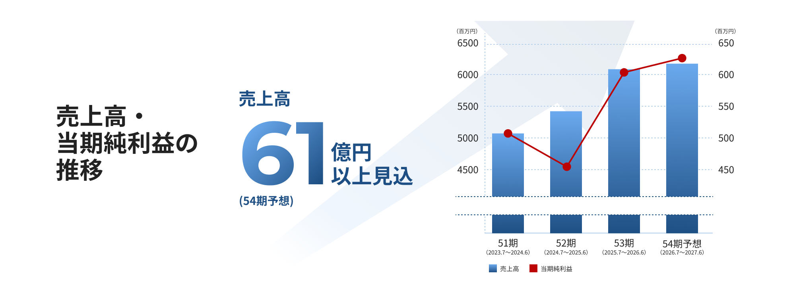
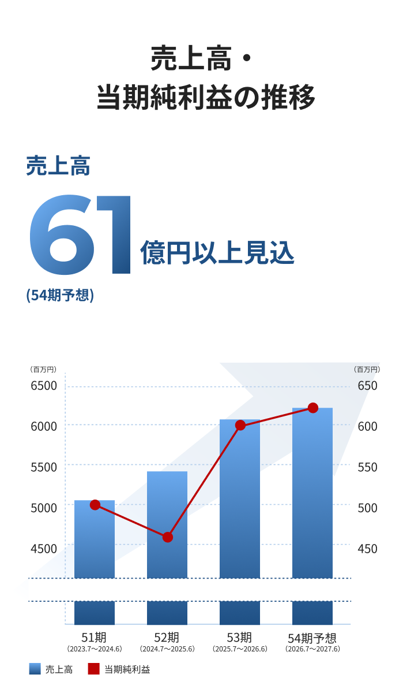
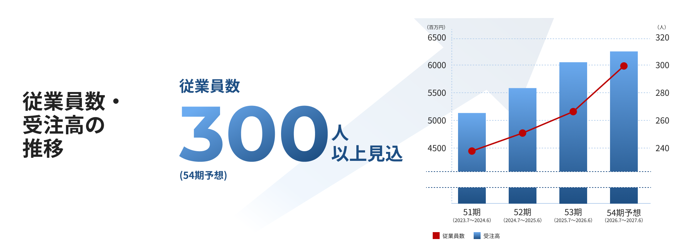
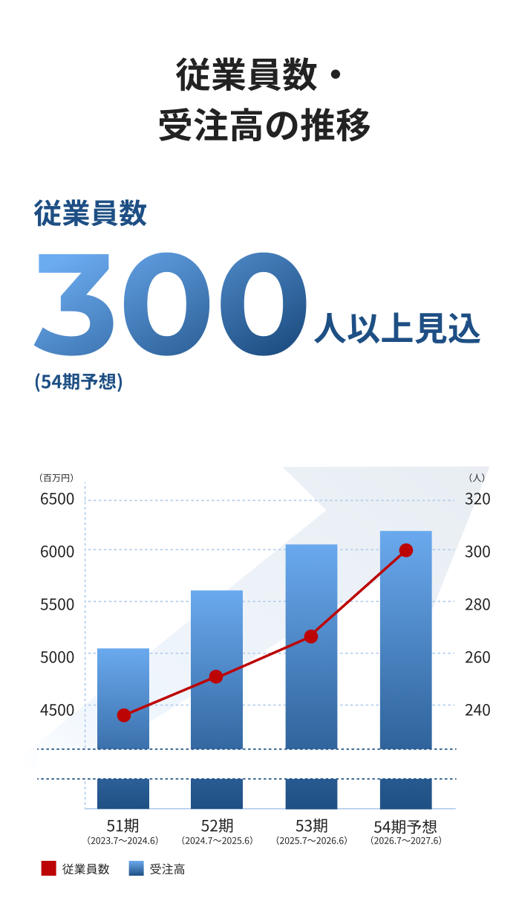

大阪本社・大阪支社
〒530-0005 大阪府大阪市北区中之島6丁目2番40号
（中之島インテス19階）
TEL:06-6447-8181 / FAX:06-6447-8196
水と環境の未来をデザインする
株式会社三水コンサルタントは、１９７４年の創業以来、「上水道」「下水道」「工業用水」に由来する社名のもと、水と環境に関わる社会基盤整備に携わってまいりました。健全で安心・安全な水環境を次世代へ引き継ぐことは、私たちの重要な使命であると考えております。
現在、日本の水インフラは整備の時代から維持管理・更新の時代へと移行し、人口減少や気候変動など社会環境も大きく変化しております。当社は、水と環境の総合コンサルタントとして、水と環境の未来をデザインするコンサルタントとして、技術力の向上と技術領域の拡充に取り組み、豊かで安全な社会の実現に貢献してまいります。
企業の価値を支えるのは人材であります。当社では技術者一人一人が専門性を高めながら安心して働くことができる職場環境づくりをすすめ、次代を担う人材の育成にも力を注いでおります。
これからも誠実な技術と信頼を礎に、お客様の事業を支えるパートナーとして社会に貢献してまいります。今後とも一層のご指導、ご支援を賜りますようお願い申し上げます。
株式会社三水コンサルタント
代表取締役社長 山﨑義広

当社は、昭和49年に水を専門とするコンサルタントとして設立した会社です。
今日まで上水道、下水道そして水を活用する工業用水や再生水等の社会資本整備に携わってきました。
コンサルタントサービスを主とする当社は、次の3つの心構えを企業理念としております。
企業にとって法令と社会規範の遵守は不可欠であります。次のことを遵守した企業活動を行います。
① 誠実かつ企業倫理にもとづく活動
② 公正・自由な競争による営業展開
③ 公平・相互理解による調達取引
コンサルタントにとって最も重要なことは、高品質な成果品を納期までに提供することであります。常に次のことを意識しコンサルタントサービスを行います。
① 顧客ニーズに応じた技術提案
② 地球環境に配慮した技術提案
③ 更なる品質力・技術力の向上
コンサルタントは重要な情報に接する機会が多いことから、次のことを念頭に徹底した情報管理を行います。
① 顧客情報・個人情報の厳格・適正な管理
② 業務上の守秘義務の徹底
③ 外部からの不正アクセス等の防止
コンサルタント業務の核となるのは人材（財）であり、従業員にとってその源泉となるのは魅力ある職場環境であります。次の職場環境を構築しています。
① 従業員一人ひとりの人格・価値観の尊重
② ワークライフバランスへの取組み
③ 人材育成・能力開発等の人材（財）への投資
国内に加えて、次の国際貢献を行い水と環境のコンサルタントの成長の一方策とします。
① 水と環境を軸とする技術支援
② 国内技術の海外活用等
大阪市東区久太郎町に創業
初代社長に武島繁雄が就任
建設コンサルタント登録（下水道及び水道部門）
建築士事務所登録
測量業者登録
東京支社開設
西部支社開設
大阪支社開設
東北支社開設
資本金を3千9百万円に変更
代表取締役会長に武島繁雄が就任
代表取締役社長に中川幸男が就任
代表取締役社長に武島繁雄が就任
代表取締役社長に田野嘉男が就任
代表取締役社長に中村葵が就任
代表取締役社長に武島一典が就任
ISO 27001(ISMS)認証取得
代表取締役社長に山﨑義広が就任
地質調査業者登録
労働者派遣事業登録
資本金を5千万円に変更
ISO 55001(AMS)認証取得

| 役職 | 氏名 | 資格 |
|---|---|---|
| 代表取締役社長 |
山
﨑
義
広
|
［技術士（上下水道部門）］ |
| 常務取締役 東日本事業本部長 |
伊
澤
康
|
|
| 常務取締役 本社総務部長 |
下
村
豊
実
|
|
| 常務取締役 西日本事業本部長 (兼)東日本副事業本部長 |
長
島
隆
幸
|
［技術士（総合技術監理部門）］ |
| 取締役 西日本副事業本部長 (兼)大阪支社長 |
福
積
登
|
［設備設計一級建築士］ |
| 取締役 水の官民連携推進部長 (兼)東北支社長 |
鈴
木
敦
|
［技術士（総合技術監理部門）］ |
| 監査役 |
上
嶋
秀
一
|
|
| 執行役員 業務推進本部 施設統括部長 |
村
瀬
大
輔
|
［技術士（上下水道部門）］ |
| 執行役員 西日本事業本部 西日本施設統括部長 |
住
山
真
|
［技術士（上下水道部門）］ |
| 執行役員 業務推進本部 水道統括部長 (兼)海外室長 |
中
込
修
|
［技術士（総合技術監理部門）］ |
| 執行役員 水の官民連携推進部 東日本統括部長 (兼)東京支社長 |
弓
削
田
克
美
|
［技術士（総合技術監理部門）］ |
| 執行役員 東日本事業本部 東日本施設統括部長 |
中
井
敏
公
|
［技術士（上下水道部門）］ |
| 理事 水の官民連携推進部 西日本統括部長 (兼)業務推進本部 営業統括部長 |
宮
下
修
巳
|
|
| 理事 西日本事業本部 計画統括部長 |
見
須
奈
智
|
［技術士（上下水道部門）］ |
| 理事 東日本事業本部 東日本施設事業部長 |
小
泉
正
浩
|
［RCCM（下水道部門）］ |
| 理事 西日本事業本部 西日本事業部長 |
藤
本
佳
嗣
|
［技術士（上下水道部門）］ |
| 理事 西日本事業本部 西日本水道事業部長 |
中
下
尚
史
|
［技術士（上下水道部門）］ |
| 理事 西日本事業本部 西日本施設事業部長 |
土
山
祥
治
|
［技術士（上下水道部門）］ |
| 理事 東日本事業本部 東日本事業部長 |
山
田
龍
男
|
［技術士（総合技術監理部門）］ |
| 理事 東日本事業本部 東日本施設事業部 施設第一部長 |
長
谷
川
博
昭
|
［設備設計一級建築士］ |
| 中部支社長 |
堀
川
英
明
|
［技術士（上下水道部門）］ |
| 西部支社長 |
髙
木
龍
|
［一級建築士］ |
| 特別顧問 |
押
領
司
重
昭
|
［技術士（総合技術監理部門）］ |
| 技術士(66人) | 総合技術監理部門（上下水道－下水道） |
|---|---|
| 総合技術監理部門（上下水道－上水道及び工業用水道） | |
| 総合技術監理部門（建設－河川、砂防及び海岸・海洋） | |
| 上下水道部門（下水道） | |
| 上下水道部門（上水道及び工業用水道） | |
| 電気電子部門（電気設備） | |
| 建設部門（河川、砂防及び海岸・海洋） | |
| 建設部門（建設環境） | |
| 衛生工学部門（廃棄物処理） | |
| 衛生工学部門（廃棄物管理） | |
| RCCM(34人) | 下水道部門 |
| 上水道及び工業用水道部門 | |
| 建設環境部門 | |
| 電気電子部門 | |
| 廃棄物部門 | |
| 建築関係(27人) | 設備設計一級建築士 |
| 一級建築士 | |
| 二級建築士 | |
| 建築積算士 | |
| 管理建築士 | |
| 大阪府被災建築物応急危険度判定士 | |
| 愛知県被災建築物応急危険度判定士 | |
| 兵庫県震災建築物応急危険度判定士 | |
| 測量(21人) | 測量士 |
| 電気関係(6人) | 第二種電気主任技術者 |
| 第三種電気主任技術者 | |
| 第一種電気工事士 | |
| 第二種電気工事士 | |
| 施工監理(34人) | 1級土木施工管理技士 |
| 2級土木施工管理技士 | |
| 1級造園施工管理技士 | |
| 1級管工事施工管理技士 | |
| 1級電気工事施工管理技士 | |
| 2級電気工事施工管理技士 | |
| 1級建築施工管理技士 | |
| 環境関係(7人) | 環境計量士 |
| 産業廃棄物中間処理施設技術管理者 | |
| 産業廃棄物焼却施設技術管理者 | |
| エネルギー管理士 | |
| 2級ビオトープ計画管理士 | |
| 国際資格(1人) | APEC Engineer |
| 下水道技術検定(29人) | 日本下水道事業団第1種技術検定 |
| 日本下水道事業団第2種技術検定 | |
| 日本下水道事業団第3種技術検定 | |
| その他(102人) | コンクリート診断士 |
| 下水道管路管理技士 | |
| 給水装置工事主任技術者 | |
| 危険物取扱者 | |
| 酸素欠乏・硫化水素危険作業主任者 | |
| 第二種酸素欠乏危険作業主任者 | |
| 公害防止管理者 | |
| 監理技術者 | |
| 衛生管理者 | |
| 無人航空従事者 |
（令和8年9月1日現在）
| 論文名 | 主催者 *1 | 発表文献名 | 著者 | 発表年 |
| 地中障害物対策を取り入れら大中口径管推進工法の設計事例について | 株式会社 LSプランニング |
月刊推進技術 2025年9月号 |
袖山弘 | 2025 |
| 池状構造物の3次元効果を考慮した耐震設計事例 | 公益社団法人 全国上下水道コンサルタント協会 |
令和6年度技術報告集（第39号） | 時田大 北村拓也 |
2025 |
| 想定最大規模降雨による内水浸水想定区域図作成の事例 | 公益社団法人 全国上下水道コンサルタント協会 |
令和5年度技術報告集（第38号） | 渡辺太郎 | 2024 |
| 農業集落排水処理施設統廃合における施設活用事例 | 公益社団法人 全国上下水道コンサルタント協会 |
令和4年度技術報告集（第37号） | 森正輝 | 2023 |
| 浸水多発区域における雨水バイパス幹線実施設計事例 | 一般社団法人 日本非開削技術協会 |
第34回非開削技術研究発表会論文集 | 紙野晃輝 藤本佳嗣 |
2023 |
| 平坦な住宅密集地における雨水幹線増強工事の詳細設計事例 | 公益社団法人 全国上下水道コンサルタント協会 |
令和3年度技術報告集（第36号） | 藤本佳嗣 | 2022 |
| 地震によるマンホール浮上対策施設の抽出と工法選定 | 一般社団法人 日本非開削技術協会 |
第33回非開削技術研究発表会論文集 | 吉見崇 | 2022 |
| 下水道管路施設の老朽化対策 | 一般社団法人 日本非開削技術協会 |
第32回非開削技術研究発表会論文集 | 上瀧幸広 坂本亮介 |
2021 |
| 途上国の廃棄物の処理・処分の現状と課題 | 一般社団法人 持続可能社会推進コンサルタント協会 |
持続コン協会報 第86号 |
鎌田寛子 | 2021 |
| 亜熱帯地域（沖縄県）における負荷率の変動要因 | 公益社団法人 全国上下水道コンサルタント協会 |
令和元年度技術報告集（第34号） | 米谷直晃 | 2020 |
| 離島における最適な下水処理方式選定の一例 | 公益社団法人 全国上下水道コンサルタント協会 |
令和元年度技術報告集（第34号） | 吉田恵舗 | 2020 |
| 長距離・曲線施工が求められる現場条件での低耐荷力管推進工法の採用事例 | 一般社団法人 日本非開削技術協会 |
第31回非開削技術研究発表会論文集 | 鈴木瑞明 | 2020 |
| 様々な特殊条件下での推進工法選定の ポイントと解決事例 |
株式会社 LSプランニング |
月刊推進技術 2020年6月号 |
袖山弘 | 2020 |
| 下水処理場の耐震診断に伴う曝気設備全台切替の一例 | 公益社団法人 全国上下水道コンサルタント協会 |
平成30年度技術報告集（第33号） | 育村由晴 | 2019 |
| 地盤改良杭が設置された軟弱地盤の県道下における下水管渠推進工法設計の一事例 | 一般社団法人 日本非開削技術協会 |
第30回非開削技術研究発表会論文集 | 石田幸宏 | 2019 |
| 2019年度技術士試験 上下水道部門 傾向と対策 |
株式会社 鹿島出版会 |
解答例 | 吉見崇 | 2019 |
| 下水処理場の耐震診断に伴う曝気設備全台切替の一例 | 一般社団法人 全国上下水道コンサルタント協会 |
平成29年度技術報告集（第32号） | 寺嶋知幸 | 2018 |
| 地下埋設物が輻輳した狭隘な道路での雨水管設計事例 | 一般社団法人 日本非開削技術協会 |
第29回非開削技術研究発表会論文集 | 亀井堅 | 2018 |
| 下水道処理施設における津波対策検討の事例報告 | 一般社団法人 全国上下水道コンサルタント協会 |
平成28年度技術報告集（第31号） | 中村宣裕 | 2017 |
| 小中規模の高速散水ろ床法に於ける電気設備の設計事例 | 一般社団法人 全国上下水道コンサルタント協会 |
平成28年度技術報告集（第31号） | 池側友樹 | 2017 |
| 下水道管路施設の老朽化対策 | 一般社団法人 日本非開削技術協会 |
第28回非開削技術研究発表会論文集 | 藤本佳嗣 | 2017 |
| 下水道管路内流量・水質調査マニュアル | 一般社団法人 全国上下水道コンサルタント協会 |
マニュアル | 山﨑義広 押領司重昭 倉持嘉徳 |
2016 |
| 下水道施設における効果的な津波対策 | 一般社団法人 全国上下水道コンサルタント協会 |
平成27年度技術報告集（第30号） | 土山祥治 五十嵐一将 |
2016 |
| 狭隘な道路下における下水道雨水管基幹施設の施工法検討・設計事例 | 一般社団法人 日本非開削技術協会 |
第27回非開削技術研究発表会論文集 | 袖山弘 | 2016 |
| 浸水被害発生地区における流出解析を活用した効果的な浸水対策施設の策定事例 | 一般社団法人 全国上下水道コンサルタント協会 |
平成26年度技術報告集（第29号） | 守内友香 | 2015 |
| 非開削による下水道管路施設の長寿命化および耐震化技術 | 一般社団法人 日本非開削技術協会 |
第26回非開削技術研究発表会論文集 | 藤本佳嗣 | 2015 |
| 既設下水管きょの上下方向たるみ改善に関する設計事例 | 一般社団法人 日本非開削技術協会 |
第25回非開削技術研究発表会論文集 | 長島隆幸 | 2014 |
| 第二期（継続）下水道総合地震対策計画の策定業務 | 一般社団法人 管路診断コンサルタント協会 |
技術研修会 事例検討報告書 |
吉見崇 | 2014 |
| 長寿命化における処理場機械の調査方法と保全区分 | 一般社団法人 全国上下水道コンサルタント協会 |
平成24年度技術報告集（第27号） | 前田充 中村哲也 吉田毎郎 |
2013 |
| 合流改善モニタリング調査の一考察 | 一般社団法人 全国上下水道コンサルタント協会 |
平成24年度技術報告集（第27号） | 村山仁 | 2013 |
| 長寿命化業務における布設年度と管種別による劣化原因分析に対する考察 | 一般社団法人 全国上下水道コンサルタント協会 |
平成23年度技術報告集（第26号） | 永森彰 | 2012 |
| 管路耐震化のための調査・診断・実施設計業務 | 一般社団法人 管路診断コンサルタント協会 |
技術研修会 事例検討報告書 |
大友寛之 | 2012 |
| 推進工法のトラブル対策の設計事例報告 | 一般社団法人 日本非開削技術協会 |
第23回非開削技術研究発表会論文集 | 高橋昭雄 | 2012 |
| 下水道管渠推進工法の課題と今後の技術開発の方向性 | 一般社団法人 日本非開削技術協会 |
第23回非開削技術研究発表会論文集 | 藤本佳嗣 | 2012 |
| 既設管きょの劣化診断方法に関する一提案 | 一般社団法人 日本非開削技術協会 |
第23回非開削技術研究発表会論文集 | 長島隆幸 吉見崇 |
2012 |
| 多通路型担体を用いた廃水浄化システムによる糖蜜の処理 | 公益社団法人 日本水環境学会 |
日本水環境学会年会 | 倉持嘉徳 村山仁 |
2012 |
| 「下水道未普及解消クイックプロジェクト」の計画事例 | 一般社団法人 全国上下水道コンサルタント協会 |
平成20年度技術報告集（第23号） | 杉山智洋 | 2009 |
| K市汚水幹線調査業務 | 一般社団法人 管路診断コンサルタント協会 |
技術研修会 事例検討報告書 |
藏橋晴雄 | 2007 |
| 大阪府水道部村野浄水場沈澱池改造工事 | 一般社団法人 全国上下水道コンサルタント協会 |
平成17年度技術報告集（第20号） | 原田和幸 | 2006 |
| 東北新幹線トンネルの管渠横断工の実施設計例 | 一般社団法人 全国上下水道コンサルタント協会 |
平成17年度技術報告集（第20号） | 石山博敏 | 2006 |
| ポンプゲート場計画の一考察 | 一般社団法人 全国上下水道コンサルタント協会 |
平成17年度技術報告集（第20号） | 増田有二 清水信吉 |
2006 |
| 農業集落排水事業のおよびコミュニティープラントの公共下水道への接続の一例 | 一般社団法人 全国上下水道コンサルタント協会 |
平成16年度技術報告集（第19号） | 松田勝 | 2005 |
| 不明水調査の一考察 | 一般社団法人 全国上下水道コンサルタント協会 |
平成15年度技術報告集（第18号） | 長島隆幸 | 2004 |
| 管きょ改築の診断およびその設計例 | 一般社団法人 全国上下水道コンサルタント協会 |
平成15年度技術報告集（第18号） | 長島隆幸 | 2004 |
| 余剰活性汚泥の算定式に関する一考察 | 一般社団法人 全国上下水道コンサルタント協会 |
平成14年度技術報告集（第17号） | 川口昭範 | 2003 |
| 雨水流出解析モデルに関する一考察 | 一般社団法人 全国上下水道コンサルタント協会 |
平成13年度技術報告集（第16号） | 川口国康 宮地有正 |
2002 |
| 回転円盤型電極のバイオエレクトロ装置による脱窒処理に関する実験的研究 | 一般社団法人 全国上下水道コンサルタント協会 |
平成12年度技術報告集（第15号） | 郭一令 | 2001 |
| 脱臭設備検討事例＜生物、活性炭、薬液洗浄の経済比較＞ | 一般社団法人 全国上下水道コンサルタント協会 |
平成12年度技術報告集（第15号） | 高橋史郎 山下真人 |
2001 |
| 流動担体添加活性汚泥法における硝化反応について | 一般社団法人 全国上下水道コンサルタント協会 |
平成11年度技術報告集（第14号） | 宮地有正 後藤紀子 |
2000 |
| 下水処理水再利用施設に関わる更新計画－藻類異常発生要因と対策－ | 一般社団法人 全国上下水道コンサルタント協会 |
平成11年度技術報告集（第14号） | 山本則幸 松永博之 |
2000 |
| 降雨形態による浸水への影響に関する一考察 | 一般社団法人 全国上下水道コンサルタント協会 |
平成11年度技術報告集（第14号） | 朱春黙 山内廣司 山﨑義広 |
2000 |
| 地方都市における共同汚泥処理施設への集約汚泥量の把握に対する一考察 | 公益社団法人 日本下水道協会 |
下水道研究発表会 | 穴田英樹 | 1999 |
| 流入汚水量増加に伴う既設活性汚泥法の対応策 | 公益社団法人 日本下水道協会 |
下水道研究発表会 | 宮地有正 | 1999 |
| 上下水道における費用効果分析 | 一般社団法人 全国上下水道コンサルタント協会 |
パネルディスカッション 並びに受託業務報告会 |
山内廣司 | 1999 |
| 駿河海岸の浸食に伴う藤守・栃山川河口部の地形変化新河口処理方法の提案 | 海洋開発協会 | 海洋開発シンポジュウム | 松田勝 | 1997 |
| 合流式下水道越流水（CSO）対策の研究 | 一般社団法人 全国上下水道コンサルタント協会 |
パネルディスカッション 並びに受託業務報告会 |
山﨑義広 | 1997 |
| SWO（分流式雨水放流水）問題 | 一般社団法人 全国上下水道コンサルタント協会 |
パネルディスカッション 並びに受託業務報告会 |
及川真也 | 1997 |
| 配水管網における管経路解析及び水質予測方法に関する研究 | 社団法人土木学会 | 論文集 | 朱春黙 | 1997 |
| エムシャー川流域再生計画による水管理 | 株式会社環境新聞社 | 月刊下水道2月号 | 吉川真幸 | 1997 |
| 合流式区域における面的浸水対策事例 | 一般社団法人 全国上下水道コンサルタント協会 |
平成8年度技術報告集（第11号） | 堀川英明 | 1997 |
| 管路設計のポイント | 株式会社環境新聞社 | 月刊下水道6月号 | 黒田秀男 | 1997 |
| 広域下水道共同整備事業における各市町村の分担費用に関する一考察 | 公益社団法人 日本下水道協会 |
下水道研究発表会 | 黒田秀男 | 1997 |
| ヨーロッパにおけるCSO問題の取り組みを聞いて | 株式会社環境新聞社 | 月刊下水道2月号 | 山﨑義広 | 1997 |
| 小規模下水道における非開削工法 | 一般社団法人 日本非開削技術協会 |
非開削技術6月号 | 中村葵 | 1997 |
| 涸沼親沢鼻への流入河川の河口部地形特性と養浜実験について | 社団法人土木学会 | 海洋工学論文集講演会 | 松田勝 | 1996 |
| 積雪地帯における流雪水路の計画・設計 | 一般社団法人 全国上下水道コンサルタント協会 |
都市域の雨水排除に関する国際会議 | 山﨑義広 吉川真幸 黒田秀男 |
1996 |
| 小規模下水道計画における複数処理区の考え方 | 一般社団法人 全国上下水道コンサルタント協会 |
平成7年度技術報告集（第10号） | 王尾和寿 | 1996 |
| 小規模下水道計画における処理場の設定方法 | 公益社団法人 日本下水道協会 |
下水道研究発表会 | 鈴木敦 | 1995 |
| 涸沼親沢鼻砂嘴の湖浜特性に関する一考察 | 社団法人土木学会 | 海洋開発委員会 開発論文集 |
松田勝 | 1995 |
| 下水道計画区域の設定と事業手法を考える | 一般社団法人 全国上下水道コンサルタント協会 |
平成6年度技術報告集（第9号） | 山内廣司 | 1995 |
| 雨水吐き室の水量制御についての一考察 | 一般社団法人 全国上下水道コンサルタント協会 |
平成5年度技術報告集（第8号） | 三沢浄 | 1994 |
| 都市下水の嫌気性生物処理 | 社団法人土木学会 | 年次学術講演概要集 | 鈴木敦 | 1989 |
| 受益者負担金算定のための一試案 | 一般社団法人 全国上下水道コンサルタント協会 |
昭和62年度技術報告集（第2号） | 武島繁雄 | 1988 |
| 受賞年 | 表彰機関 | 表彰業務名 |
| 2020 | 神奈川県流域下水道整備事務所 | 「令和2年度優良工事等施工業者」 相模川流域下水道 平塚幹線 管渠修繕実施設計業務委託 |
| 2019 | 地方共同法人日本下水道事業団 | 「令和元年度優良設計」 平成29年度薩摩川内市長浜地区浄化センター実施設計業務委託 |
| 2016 | 熊本市 | 公共下水道の被害の究明及びその復旧工事の設計 |
| 2014 | 東京都 | 落合処理区落合処理分区調査設計 |
| 2013 | 神奈川県 | 相模川流域右岸処理場低高段吐出渠改築設計委託 |
| 2006 | 神奈川県 | 相模川流域右岸処理場着水井等耐震設計 |
| 受賞年 | 表彰機関 | 技術者 | 表彰業務 |
| 2025 | 地方共同法人 日本下水道事業団 |
長谷川博昭 | 「令和7年度優良担当技術者（建築設計）」 令和6年度長崎市西部下水処理場実施設計業務委託 |
| 2021 | 地方共同法人 日本下水道事業団 |
西村拓哉 | 「令和3年度優良担当技術者」 令和2年度鳥取市吉成ポンプ場実施設計業務委託 |
| 2020 | 神奈川県流域下水道整備事務所 | 鈴木瑞明 | 相模川流域下水道 平塚幹線 管渠修繕実施設計業務委託 |
| 2018 | 公益財団法人 日本下水道新技術機構 |
藤本佳嗣 | 中小規模の都市を対象としたストックマネジメント等支援に関する 手引き書の検討の共同研究 |
| 2016 | 地方共同法人 日本下水道事業団 |
深江忠彦 | 平成27年度鳥取市千代水クリーンセンター 実施設計業務委託 |
| 2014 | 地方共同法人 日本下水道事業団 |
福積登 | 平成25年度佐久市浅科浄化センター 再構築基本設計（長寿命化計画及び耐震実施計画）業務委託 |
| 2014 | 地方共同法人 日本下水道事業団 |
岡田智雄 | 平成25年度松島町松島浄化センター 再構築基本設計（長寿命化計画）業務委託 |
| 2013 | 地方共同法人 日本下水道事業団 |
福積登 | 平成23年度伊那市伊那浄化管理センター 再構築基本設計（長寿命化計画）業務委託 |
| 2010 | 地方共同法人 日本下水道事業団 |
杉山智洋 | 平成21年度大槌町公共下水道に係る計画設計業務委託 |
| 2007 | 地方共同法人 日本下水道事業団 |
吉川真幸 | 平成18年度二戸市公共下水道に係る計画設計業務 |
| 研究開発名等 | 関係機関 *1 | 発表文献等 | 発表者 | 発表年 |
| 中小規模の都市を対象としたストックマネジメント等支援に関する手引き | 公益財団法人 日本下水道新技術機構 |
マニュアル | 藤本佳嗣 | 2018 |
| 流出解析モデル利活用マニュアル | 公益社団法人 日本下水道新技術機構 |
マニュアル | 村山仁 | 2017 |
| 下水道CIM導入に向けたBIM/CIMの調査研究 | 日本下水道事業団 | 共同研究報告書 | 押領司重昭 村瀬大輔 福若久則 前田充 今野博之 |
2016 |
| 下水道管路内流量・水質調査マニュアル | 一般社団法人 全国上下水道コンサルタント協会 |
マニュアル | 山﨑義広 押領司重昭 |
2016 |
| 微生物生育システムの制御による 高効率水質浄化技術の研究開発 |
関東経済産業局 | 平成22～24年度 戦略的基盤技術高度化 支援事業研究開発 （サポイン事業）*2 |
山﨑義広 町田隆彦 村山仁 倉持嘉徳 |
2012 |
| 下水道雨水管理計画策定マニュアル | 一般社団法人 全国上下水道コンサルタント協会 |
技術委員会WG | 山﨑義広 吉川真幸 |
2012 |
| 下水道雨水管理計画策定 | 一般社団法人 全国上下水道コンサルタント協会 |
マニュアル | 吉川真幸 | 2012 |
| 下水道用マンホールふたの計画的な維持管理と改築に関するマニュアル | 財団法人 下水道新技術推進機構 |
マニュアル | 村山仁 | 2012 |
| Hager下水道水理学理論と実務 | 株式会社 公共投資ジャーナル社 |
翻訳協力 | 山﨑義広 | 2008 |
| 下水道管路改築修繕技術資料 | 財団法人 下水道新技術推進機構 |
マニュアル | 長島隆幸 | 2006 |
| 下水道管きょ改築・修繕にかかる調査・診断・設計実務必携 | 一般財団法人経済調査会 （編集 一般社団法人管路診断コンサルタント協会） |
不明水調査 | 山﨑義広 | 2005 |
| いま、下水道を語る 坐忘の境地から | 水道産業新聞社 | 武島繁雄 | 2005 | |
| 下水管きょ改築等の工法選定手引き（案） | 社団法人日本下水道協会 | マニュアル | 長島隆幸 | 2002 |
| 人生七〇年望洋の嘆 | ニッポングラフ新聞社 | 武島繁雄 | 1996 | |
| 行政 現場からの視点 いま、下水道を語る | 水道産業新聞社 | 武島繁雄 | 1986 |
（持続的成長と拡充・社会に貢献する100年企業を目指して）
三水コンサルタントは1974年の創設以来、上下水道を中心とした「水と環境」のコンサルタント事業を展開してきました。この間、上下水道業界においては、上下水道行政の移管、ウォーターPPP、DXなど、大きな転換を迎えようとしています。また、本計画期間の2024年6月には、設立50周年を迎え、次の50年に向かう新たなスタートの期間でもあります。
三水コンサルタントの使命は、「持続的に水と環境のソリューション（問題解決）を通じて豊かで安全な社会に貢献する」ことであり、三水コンサルタントがこれまで得意とする上下水道事業にあっては、インフラマネジメントの時代に突入しており、建設・管理・改築更新を一体的に捉えると共に、地域や民間との連携、災害対策における安全確保や環境保全を進めること等が求められます。総合的にマネジメントする時代においては、コンサルタントの責務は業務領域の拡大と共に重くなります。さらに新しい領域での技術とノウハウの構築を求められてきます。
100年企業を目指すには、これまでの50年の延長では限界があります。さらに持続的に成長し、拡充していくためには、三水自身の変革（トランスフォーメーション）が必至です。このことから、第三次の三水コンサルタント中期経営計画においては、「三水トランスフォーメーション（三水Ｘ）」をキーワードに下記の項目に取り組んでまいります。
総合コンサルタントの一環として、グループ会社「株式会社エスエスシー」を設立したところですが、さらなる業容の拡充を目指します。
これまでは、設計・施工分離方式のなかで設計業務が主でしたが、上下水道の事業環境、運営方式の変化に合わせ、
設計力＋提案力に社員のベクトルを方向転換（意識改革）するとともに育成してまいります。
ウォーターPPPなどの官民連携事業に対しては、プレイヤー参画、アドバイザリー、履行監視など多角的に取り組んでまいります。
そのためには、さらに信頼される企業となるため、まず経営基盤の一層の充実を図ります。
人口減少に伴い就業人口が減少している社会情勢下において、一層の働き方改革を進めます。「業務のDX推進と生産性向上」、「自由な働き方の推進」、「働きやすい環境の整備」「従業員の働きがいの向上」などに取り組んでまいります。
2026年に受注高60億円（グループ全体）を目指します。




